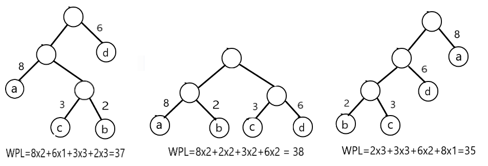
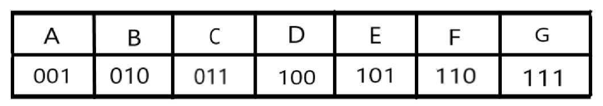
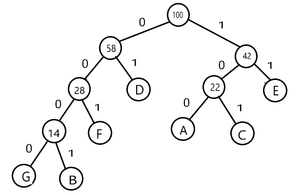
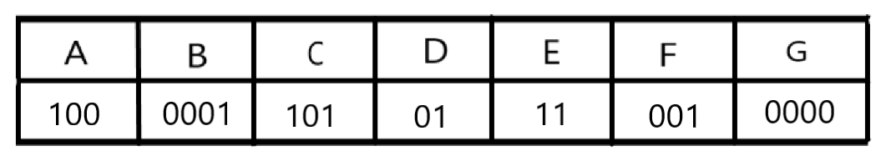

哈夫曼编码 链接到标题
哈夫曼树 链接到标题
哈夫曼树的基本概念 链接到标题
- 哈夫曼树又称为最优树，是一类带权路径长度最短的树，在实际中有广泛的应用。
- 路径： 从树中一个结点到另一个结点之间的分支构成这两个结点之间的路径
- 路径长度：路径上的分支数目称作路径的长度
- 树的路径长度：从树根到每一结点的路径长度之和
- 权：赋予某个实体的一个量，是对实体的某个或某些属性的数值化描述，在数据结构中实体有结点和边两大类，对应有结点权和边权。
- 结点的带权路径长度：从该结点到树根之间的路径长度与结点上权的乘积。
- 树的带权路径长度：树中所有叶子结点的带权路径长度之和，记作
$WPL = \sum_{k=1}^n w_kl_k$ - 哈夫曼树：假设有 m 个权值
$w_1,w_2…,w_m$,可以构造一棵含 n 个叶子结点的二叉树，每个叶子结点的权为$w_i$，则其中带权路径长度 WPL 最小的二叉树称作最优二叉树或哈夫曼树。
下图所示的三种二叉树都含有四个带权叶子结点，带权结点分别 a(8),b(2),c(3),d(6).

从图中可以看出，叶子结点所在的位置不同，构成的二叉树 WPL 也不同，可以直观的发现，在哈夫曼树中，权值越大的结点距离根结点的距离越近。
哈夫曼树的构造过程 链接到标题
- 根据给定的 n 个权值
$w_1,w_2,…w_n$,构造 n 棵只有根结点的二叉树，这 n 棵二叉树构成一个森林 F。 - 在森林 F 中选取两棵根结点的权值最小的树作为左右子树构造一棵新的二叉树，且置新的二叉树的根结点的权值为其左、右子树上根结点的权值之和。
- 在森林 F 中删除这两棵子树，同时将新得到的二叉树加入 F 中
- 重复第二步和第三步，直到 F 只含一棵树为止，这棵树便是哈夫曼树。
如下图所示为叶子结点$a(7),b(5),c(2),d(4)$的哈夫曼树的构造过程：

首先对叶子结点的权值进行排序，然后选择权值最小的两个结点分别作为新二叉树的左右子树，新二叉树的根结点为左右子树权值之和，接着依然对新二叉树的根结点与其余两个叶子结点排序，然后再次选择权值最小的两个结点作为左右子树构造新二叉树，直到只剩下最后一棵树，则构造完毕。
哈夫曼树的存储结构 链接到标题
哈夫曼树是一种二叉树，可以采用二叉树的存储方法实现，由于哈夫曼树中没有度为 1 的结点，则一棵有 n 个叶子结点的哈夫曼树共有 2n-1 个结点，可以存储在一个大小为 2n-1 的数组中，树中每个结点包含其双亲信息和孩子结点的信息，存储结构可以如下设计：
typedef struct{
int weight; //结点的权值
int parent,lchild,rchild; //结点的双亲，左孩子，右孩子的下标
}HTNode,*HuffmanTree; //动态分配数组存储哈夫曼树
构造哈夫曼树 链接到标题
- 初始化： 首先动态申请 2n 个单元，然后循环 2n-1 次，遍历所有单元，并初始化，再遍历一次，输入前 n 个单元中叶子结点的权值。
- 创建树： 通过循环，选择、删除与合并来创建二叉树。选择当前森林中双亲为 0 且权值最小的两个树根结点，删除是将两个结点的双亲改为非零，合并是将两个树根结点的权值作为一个新结点的权值依次存入数组 n+1 之后的单元，记录新结点的下标。
代码简易实现 链接到标题
已知叶子节点为{5,29,7,8,14,23,3,11},根据叶子结点构造哈夫曼树。
typedef struct {
int weight; //结点的权值
int parent, lchild, rchild; //结点的双亲，左孩子，右孩子的下标
}HTNode, *HuffmanTree; //动态分配数组存储哈夫曼树
void Select(HuffmanTree HT, int n, int &s1, int &s2) {
s1 = s2 = -1;
int i;
for (i = 0; i < n; ++i) {
if (-1 == HT[i].parent) {
if (-1 == s1) s1 = i;
else {
s2 = i;break;
}
}
}
if (HT[s1].weight > HT[s2].weight) {
int t = s1;
s1 = s2;
s2 = t;
}
for (i += 1; i < n; ++i) {
if (-1 == HT[i].parent) {
if (HT[i].weight < HT[s1].weight) {
s2 = s1;
s1 = i;
}
else if (HT[i].weight < HT[s2].weight) {
s2 = i;
}
}
}
/*测试
cout << s1 << s2<<endl;*/
}
int CreateHuffmanT(HuffmanTree &HT,int wgt[],int n) {
int m = 2 * n - 1;
HT = (HTNode*)malloc(sizeof(HTNode) * m);
for (int i = 0; i < m; i++) {
HT[i].lchild = -1;
HT[i].parent = -1;
HT[i].rchild = -1;
HT[i].weight = wgt[i];
}
for (int i = n; i < m;i++) {
int s1, s2;
Select(HT, i, s1, s2); //挑选权值最小的两个结点
HT[s1].parent = i;
HT[s2].parent = i;
HT[i].lchild = s1;
HT[i].rchild = s2;
HT[i].weight = HT[s1].weight + HT[s2].weight;
}
return 1;
}
int main() {
int Weight[] = { 5,29,7,8,14,23,3,11 };
HuffmanTree HT;
CreateHuffmanT(HT, Weight, 8);
for (int i = 0; i < 2 * 8 - 1; i++) { //输出
cout << HT[i].weight << " "<< HT[i].parent << " " << HT[i].lchild << " " << HT[i].rchild << endl;
}
getchar();
return 0;
}
哈夫曼编码 链接到标题
在进行数据压缩时，为了使压缩后的数据文件尽可能短，可采用不定长编码，基本思想是：为出现次数较多的字符编以较短的编码，为确保对数据文件进行有效的压缩和对压缩文件进行正确的解码，可以利用哈夫曼树来设计二进制编码
编码的两个概念 链接到标题
- 前缀编码： 如果在一个编码方案中，任一个编码都不是其他任何编码的前缀，则称编码为前缀编码，前缀编码可以保证对压缩文件进行解码时不产生二义性，确保正确解码。
- 哈夫曼编码： 一棵具有 n 个叶子的哈夫曼树，若对树中的每个左分支赋予 0，右分支赋予 1，则从根到每个叶子的路径上，各分支的赋值分别构成一个二进制串，该二进制串称为哈夫曼编码。
- 哈夫曼编码是最优前缀编码。
如果要传输一串字符 BACEFGAB，使用普通的编码，如下图所示

真正要传输的二进制代码为：010001011101110111001010，如果传输很长的一篇文章，由于各个字母出现的频率不同，采用这种编码会很长，假设字母出现的频率为 A(10),B(8),C(12),D(30),E(20),F(14),G(6),所有字母出现的频率之和为 100，可以采用哈夫曼编码的形式，构造哈夫曼树，将权值左分支改为 0，右分支改为 1，如下图。

由此可根据从树根到叶子的路径来进行编码

编码的二进制值为 00011001011100100001000001，比之前的编码还长了，但当时是随便规定的字符串频率，如果实际的字符串按照哈夫曼树的权值来出现，比如 DECFEEFDCA,编码就会进行压缩 0111101001111100101101100，一共 25 位二进制，如果按照之前的编码需要 3×10=303×10=30 位二进制，压缩了大概 17% 左右。